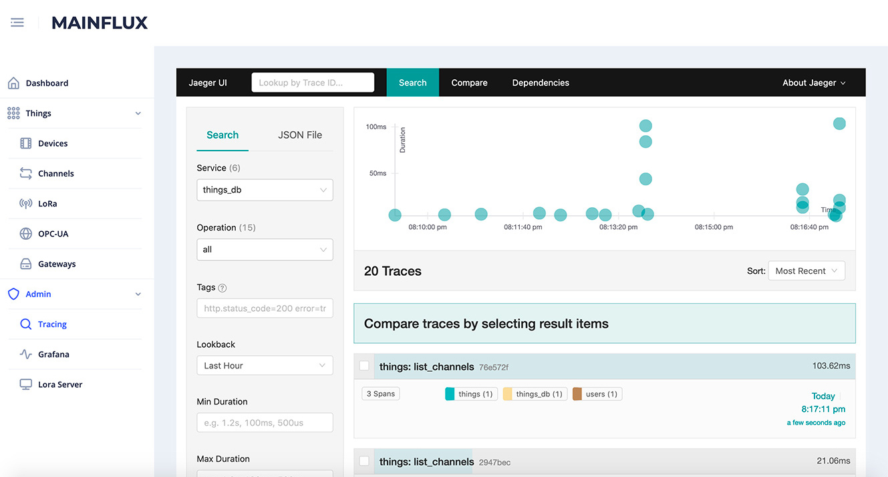
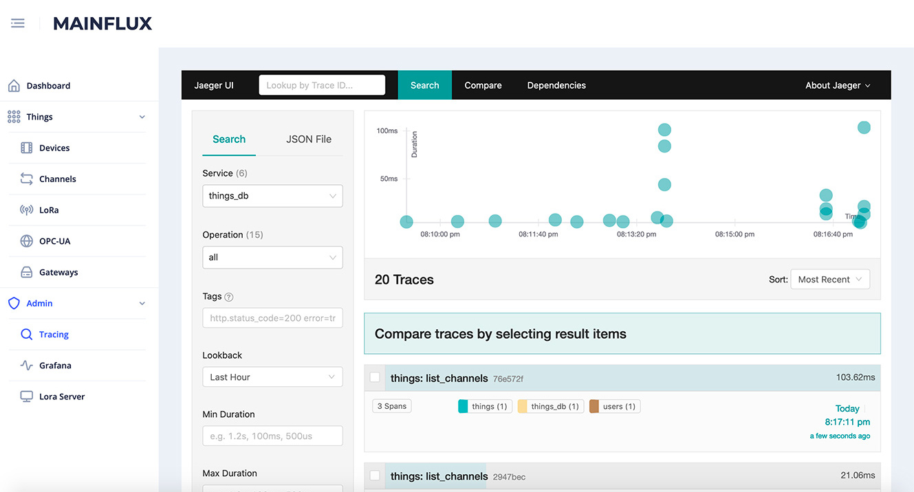

WHAT IS EDGEFLUX IOT DEVICE MANAGEMENT
Deployment of IoT devices and the complete technology stack that support it is just the first phase of the IoT solution. Considering that many IoT deployments consist of a huge number of devices,a successful IoT solution requires remote maintenance and management of connected devices.
Edgeflux is a system for remote device and gateways management which ensures the secure and proper functioning of multiple IoT devices and gateways after they have been deployed.
A full range of Edgeflux IoT Device Management functionalities includes fast device onboarding with bulk provisioning, in-depth visibility of device status, its performance metrics and security issues, logical groupings of devices into hierarchical structures and software and firmware update actions.
Device Onboarding
• Device discovery and connection
• Provisioning and Registration
• Device authentication
Device Monitoring & Diagnostics
• Remote device monitoring and troubleshooting
• Predictive maintenance
Device Management
• Secure device data transfer to cloud
• Device organization and configuration
• Device location across the entire device fleet in real-time
Device Updates
• Remote software and firmware updates (OTA)
• Reboots, factory resets, and security patches, bug fixes
• New feature enhancements

 
